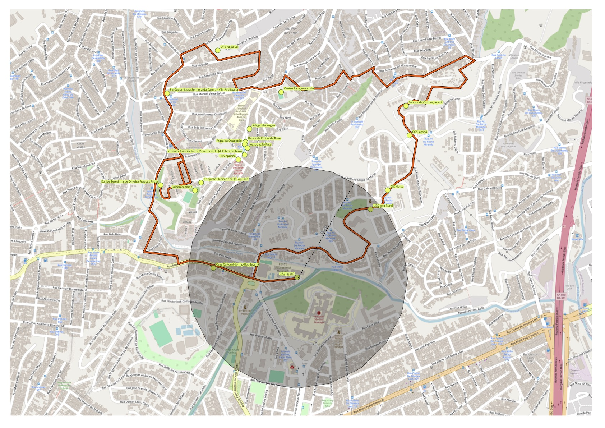

Apresentação da Atividade
Este relatório trata da primeira edição das Oficinas de Participação Cidadã do projeto Câmara na Rua, iniciativa da Câmara Municipal de São Paulo voltada à escuta qualificada da população e à organização de demandas territoriais junto ao Poder Legislativo municipal.
A atividade foi realizada no dia 21 de março de 2026, às 9h00, sob facilitação de Fernanda Luchiari de Lima, facilitadora contratada pela Escola do Parlamento por meio de Edital de Credenciamento. O local, CEU Jaçanã (R. Francisca Espósito Tonetti, 105 — Jardim Guapira), reúne escola, quadras, biblioteca e espaços de convivência, sendo referência de centralidade comunitária no território. Situa-se em área de confluência entre os bairros do Jaçanã e do Jardim Guapira, próxima à Av. Guapira, eixo estruturante da subprefeitura.
Caracterização do Território
2.1 Contexto geral: Subprefeitura Jaçanã/Tremembé
O CEU Jaçanã está inserido na Subprefeitura Jaçanã/Tremembé, que abrange dois distritos municipais — Jaçanã e Tremembé — com área total de 64,1 km² e população de aproximadamente 291 mil habitantes (Censo IBGE 2022). O distrito do Jaçanã concentra cerca de 96 mil pessoas em apenas 7,8 km², resultando em alta densidade urbana. O Tremembé, com 56 km² e 225 mil habitantes, é o quarto maior distrito do município em extensão, com expressiva presença de áreas verdes, incluindo parte do Parque Estadual da Cantareira.
Historicamente, a região desenvolveu-se ao longo de linhas de trem e em direção à Serra da Cantareira, apresentando processo de urbanização marcado por desigualdades socioespaciais e ocupação de áreas ambientalmente sensíveis, especialmente nas margens do Rio Cabuçu de Cima, principal vetor de enchentes no território.
2.2 Equipamentos públicos no entorno do CEU Jaçanã
O território dispõe de alguns equipamentos públicos relevantes, ainda que a percepção comunitária aponte gaps significativos de cobertura, especialmente na atenção básica à saúde e na assistência social:
| Tipo | Equipamento | Endereço / Referência | Observação |
|---|---|---|---|
| Educação | CEU Jaçanã (local da oficina) | R. Francisca Espósito Tonetti, 105 | Escola, quadras, biblioteca, convivência |
| Saúde | UBS Jaçanã — Dr. Sebastião Gabriel Sayago de Laet | R. São Geraldino, 222 | Atend. 7h–19h / seg–sex |
| Saúde | UPA Jaçanã (24h) | R. Ester Elisa, 229 | +18.850 atend./mês em 2025 |
| Assist. Social | CRAS Jaçanã | Av. Guapira, 2145 — V. Constança | Atend. 8h–18h / seg–sex |
| Educação | EE Prof.ª Eurico Figueiredo | R. Ministro Fonseca Filho, 75 | Escola estadual de ensino regular |
| Educação | EE Júlio Pestana | Av. Guapira, 2862 | Escola estadual — Av. Guapira |
| Meio Ambiente | Rio Cabuçu de Cima | Bacia hidrográfica — Jaçanã/Tremembé | Principal vetor de enchentes |
Localização — CEU Jaçanã e Entorno
O mapa a seguir apresenta a localização do CEU Jaçanã e dos principais equipamentos públicos no raio de influência da atividade.

Perfil dos Participantes
O público da primeira oficina foi composto predominantemente por mulheres com idade superior a 40 anos, com elevado grau de escolaridade e forte vinculação ao terceiro setor e ao associativismo local.
4.1 Insights participativos
a. Público predominantemente feminino, maduro e engajado civicamente. O evento atraiu um perfil muito específico: mulheres com mais de 40 anos, alta escolaridade, atuantes no Terceiro Setor, motivadas pela cidadania. Este é um nicho fiel, mas sinaliza baixa diversidade de perfis — jovens, homens e trabalhadores do setor privado são sub-representados.
b. O Terceiro Setor é o coração do público. Com 35% dos participantes, organizações da sociedade civil são a principal base de engajamento. A presença de entidades como MNLM, Instituto Novos Horizontes e Movimento Salve Periférico indica que o evento chega a redes de ativismo comunitário e movimentos de base — um ativo estratégico para a CMSP.
c. Alto nível educacional — possível viés de seleção. Mais de 61% tem ensino superior completo ou pós-graduação. Isso pode indicar barreira de acesso ao programa para populações com menor escolaridade, mesmo sendo gratuito. A Região Norte de SP tem perfil socioeconômico mais diverso do que o público inscrito sugere.
Demandas Levantadas pelos Participantes
As demandas foram organizadas coletivamente durante a oficina em seis eixos temáticos. A síntese a seguir é baseada nas anotações produzidas pelo grupo, com indicação dos órgãos municipais potencialmente responsáveis.
Eixo 01 — Urgente
Infraestrutura Urbana, Drenagem e Enchentes
Demanda de maior recorrência e urgência percebida. O Rio Cabuçu de Cima é o principal vetor de risco, com registros de transbordamento em períodos de chuva intensa. Participantes relataram perdas materiais recorrentes, dificuldade de acesso a ruas e danos a imóveis.
- Obras de contenção e canalização do Rio Cabuçu de Cima
- Pavimentação e manutenção de vias em áreas de encosta
- Implantação de sistemas de alerta e drenagem em fundos de vale
- Revisão de obras de contenção de encostas e taludes
Órgãos envolvidos: SIURB, Subprefeitura Jaçanã/Tremembé, SVMA
Eixo 02 — Urgente
Saúde Pública e Atenção Básica
Demanda estrutural, fortemente marcada pela sobrecarga da UPA Jaçanã (mais de 18 mil atendimentos mensais em 2025) e por lacunas na cobertura da atenção básica, com longas filas e dificuldade de acesso a especialidades.
- Ampliação e reforma de Unidades Básicas de Saúde (UBS)
- Redução do tempo de espera para consultas com especialistas
- Ampliação das equipes de Saúde da Família
- Atendimento em saúde mental e apoio psicossocial
Órgãos envolvidos: Secretaria Municipal de Saúde (SMS), OSS parceiras, Coordenadoria Regional de Saúde Norte
Eixo 03 — Média prioridade
Mobilidade e Acessibilidade
A região apresenta limitações estruturais de mobilidade, com linhas de ônibus sobrecarregadas e ausência de alternativas de transporte ativo. Participantes relataram dificuldades de deslocamento especialmente para idosos e pessoas com deficiência.
- Ampliação de frequência e cobertura de linhas de ônibus
- Implantação de calçadas acessíveis e rampas em vias de alta circulação
- Sinalização e equipamentos para pedestres idosos
Órgãos envolvidos: SPTrans, SMSP, Subprefeitura
Eixo 04 — Alta prioridade
Segurança Pública
Demanda de alta percepção subjetiva, com relatos de insegurança em áreas de baixa iluminação, praças e entornos escolares. Participantes destacaram a necessidade de integração entre poder público e comunidade.
- Melhoria e ampliação da iluminação pública
- Presença mais efetiva da Guarda Civil Metropolitana
- Ações integradas de segurança em entornos de equipamentos públicos
Órgãos envolvidos: SMSU, GCM, SSP-SP (âmbito estadual)
Eixo 05 — Alta prioridade
Meio Ambiente, Saneamento e Resíduos
O bairro enfrenta problemas crônicos de descarte irregular de lixo, especialmente em margens de córregos e encostas. A presença do Parque da Cantareira não elimina a vulnerabilidade ambiental das áreas de baixada.
- Ampliação da frequência de coleta de lixo em vias irregulares
- Combate a pontos de descarte irregular (bota-foras)
- Esgotamento sanitário em áreas de urbanização precária
Órgãos envolvidos: SVMA, AMLURB, Sabesp (estadual)
Eixo 06 — Média prioridade
Equipamentos Públicos, Cultura e Segurança Alimentar
Participantes destacaram a escassez de espaços de lazer, cultura e apoio alimentar no território, com demandas específicas voltadas a crianças, jovens e idosos.
- Ampliação de atividades culturais, esportivas e de lazer no CEU
- Criação ou fortalecimento de Restaurantes Populares e Bancos de Alimentos
- Programas de apoio a idosos e crianças em situação de vulnerabilidade alimentar
Órgãos envolvidos: SMADS, SMC (Secretaria Municipal de Cultura), ABAST
Síntese e Priorização das Demandas
Com base nas discussões registradas durante a oficina, é possível identificar uma hierarquização das demandas a partir de três critérios combinados: (a) recorrência territorial; (b) impacto direto na vida cotidiana; e (c) urgência percebida pela comunidade.
Síntese para Atuação Parlamentar
As demandas identificadas podem ser organizadas em três horizontes de atuação legislativa e de fiscalização:
Curto prazo
Manutenção e resposta imediata
- Fiscalização das obras de drenagem do Rio Cabuçu e cobrança de prazos junto à SIURB
- Indicação de melhorias de iluminação pública e manutenção viária
- Solicitação de reforço de coleta de resíduos em vias irregulares
Médio prazo
Ampliação de serviços e infraestrutura
- Emendas orçamentárias vinculadas à saúde: ampliação de equipes de ESF e novos equipamentos de atenção básica
- Articulação com a SPTrans para revisão de linhas de ônibus na região
- Apoio a projetos de urbanização e regularização fundiária em áreas de risco
Estruturante
Planejamento territorial de longo prazo
- Revisão do Plano Diretor para proteção de áreas de várzea e encosta no distrito
- Articulação com políticas estaduais de segurança hídrica e saneamento
- Integração das demandas ao processo de elaboração do Plano Plurianual (PPA)
Análise da Dinâmica Participativa
A oficina reuniu 45 participantes e evidenciou alta capacidade de formulação coletiva, com articulação clara de demandas e boa disposição para trabalho em grupo. Foram utilizadas metodologias participativas de mapeamento e priorização, com resultados sistematizados em plenária.
Potencialidades observadas
- Alta capacidade de formulação coletiva
- Presença de lideranças experientes
- Engajamento consistente ao longo da atividade
- Boa disposição para trabalho em grupo e escuta coletiva
Riscos e limitações
- Concentração de fala em atores mais organizados
- Sub-representação de grupos vulneráveis
- Risco de reprodução de agendas já institucionalizadas
- Ausência de registro formal da plenária de priorização
Considerações Finais
A primeira Oficina de Participação Cidadã do projeto Câmara na Rua no CEU Jaçanã demonstrou o potencial do território para o engajamento cidadão qualificado. As demandas sistematizadas evidenciam necessidades estruturais acumuladas — enchentes, saúde, saneamento — que requerem resposta coordenada do Executivo e atenção fiscalizadora e legislativa do Parlamento municipal.
O projeto cumpre sua função ao criar um espaço formal de escuta e organização de demandas territoriais. Para que esse potencial se traduza em transformação concreta, é indispensável garantir continuidade das atividades, diversificação do público e, sobretudo, a devolutiva institucional que dá sentido à participação cidadã.
Documento produzido pela Escola do Parlamento com base nos registros da 1ª Oficina de Participação Cidadã do projeto Câmara na Rua, realizada em 21 de março de 2026 no CEU Jaçanã. São Paulo, março de 2026.